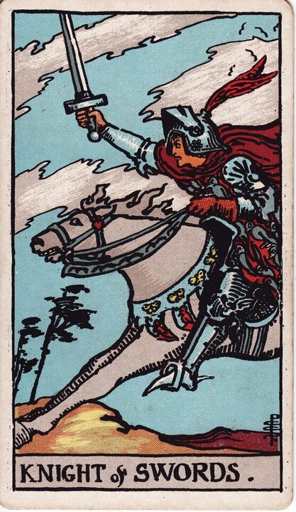

Minor Arcana · Suit of Swords
Knight of Swords Tarot Card Meaning
The Knight of Swords is the full charge - fast, sharp, direct, all forward momentum. Want to know what it means in your spread? Every reader on our line is hand-vetted - connect in under 60 seconds, $1 for your first minute, hang up anytime.
- Hand-vetted readers
- Available 24/7
- Hang up anytime

Knight of Swords - What It Shows
A knight gallops at full tilt, sword high, leaning into a storm, his horse straining forward. Everything is speed and force. Of all the Knights he moves fastest and least cautiously - pure mental drive in motion. The Knight of Swords is the air suit charging: decisive, direct, brilliant when aimed, dangerous when it doesn't think first.
Knight of Swords Upright Meaning
Upright, the Knight of Swords is fast, ambitious, direct action. Charging at a goal with intellect and nerve, cutting through hesitation, saying the blunt true thing, moving now. It's powerful and effective - with a built-in caution to aim before you fire. Its core note is decisive momentum.
Knight of Swords Reversed Meaning
Reversed, the charge goes wrong. Recklessness, aggression, tactlessness, scattered force, burnout, or rushing in without a plan and leaving wreckage. The drive is there; the direction and restraint aren't.
Knight of Swords as a Person
As a person, the Knight of Swords is fast-thinking, ambitious, blunt, and action-first (any gender) - clever, decisive, exciting. The shadow: tactless, impatient, argumentative, or all speed and no follow-through.
Knight of Swords as Feelings & in Love
As feelings, the Knight of Swords is intense and direct but more head than heart - decisive interest expressed bluntly, sometimes impatiently or inconsistently. Example: a caller asked how someone felt after a fast, intense start that cooled abruptly; the Knight of Swords read as quick, mind-led attraction that charges hard then can lose interest just as fast - strong but not always steady.
Knight of Swords in Career & Money
For work it's bold, fast action - pushing a project, making the decisive move, arguing your case directly. Example: someone deciding whether to move aggressively on an opportunity pulled this card; the message backed decisive action while flagging the Knight's blind spot - speed without a plan creates expensive mistakes.
Knight of Swords as Advice
As advice: act decisively and directly - but aim first. Use the drive and clarity, say the true thing, move fast; just don't skip the thirty seconds of thinking that keeps it from backfiring.
Knight of Swords Reversed in Love & Career
Reversed, this card deserves a closer look by area. In love, it's the fast-then-gone pattern, blunt words that wound, arguments escalated for sport, or someone who pursues hard then disappears - intensity without consistency. In career, reversed it's reckless decisions, burning bridges with bluntness, or scattering energy and burning out. The reversed Knight's question is whether the force is directed or just destructive. A live reader can help you read drive versus recklessness here.
What People Ask About the Knight of Swords
The questions readers hear most about this card:
"Knight of Swords as feelings?"
Direct, intense, head-led - quick interest, not always steady.
"Does it mean fast movement?"
Yes - things accelerating, often suddenly and decisively.
"Reversed - are they being harsh?"
Possibly blunt, aggressive, or hot-then-cold; context matters.
"Person or energy?"
Either - a fast, direct individual, or a push to act decisively.
Knight of Swords - Yes or No?
Upright: a fast yes for decisive action. Reversed leans no, or "yes but recklessly."
Knight of Swords Timing in a Reading
Timing is the least precise thing tarot does, so treat this as a lean, not a date. The Knight of Swords is one of the fastest cards - readers usually place it very soon, within days, things moving quickly and decisively. Reversed, the speed turns chaotic or stalls. A live reader reads timing from the full spread and your question far more reliably than the card alone.
Knight of Swords Card Combinations
Context changes everything - a few pairings readers see often:
Knight of Swords + Eight of Wands
Very fast movement, news, or a rapid decisive push.
Knight of Swords + The Tower
Reckless haste causing a sudden blow-up.
Knight of Swords + Queen/King of Swords
Raw drive maturing into clear, disciplined judgment.
Knight of Swords in a Tarot Reading
A meanings page is the map; a live reading is the territory. The Knight of Swords shifts with its position and the cards around it - which is what a hand-vetted reader interprets for your question. See the full Suit of Swords, all 56 cards on the Minor Arcana hub, or start a phone tarot reading.
← Page of Swords · Next: Queen of Swords →
What Does the Knight of Swords Mean for You?
A meanings list is the map; a live reading is the territory. We'll connect you with the right hand-vetted tarot reader in under 60 seconds. $1/min first call · 15 minutes for $10 · hang up anytime · 100% satisfaction promise.
Call (888) 920-6662 NowKnight of Swords - Frequently Asked Questions
What does the Knight of Swords mean?
Fast, driven, direct action - intellect and ambition charging at a goal.
What does it mean reversed?
Recklessness, aggression, scattered force, or rushing in without thinking.
What does it mean as feelings?
Intense and direct but head over heart - decisive but not always steady.
What does it mean as a person?
A fast-thinking, ambitious, blunt, action-first individual.
How much does a reading cost?
First-time callers pay $1/min, or 15 minutes for $10, and you can hang up anytime.
Get Your Tarot Reading Now
Connected to a hand-vetted reader in under 60 seconds, the cards pulled on your real question, and you hang up with clarity.
Call (888) 920-6662